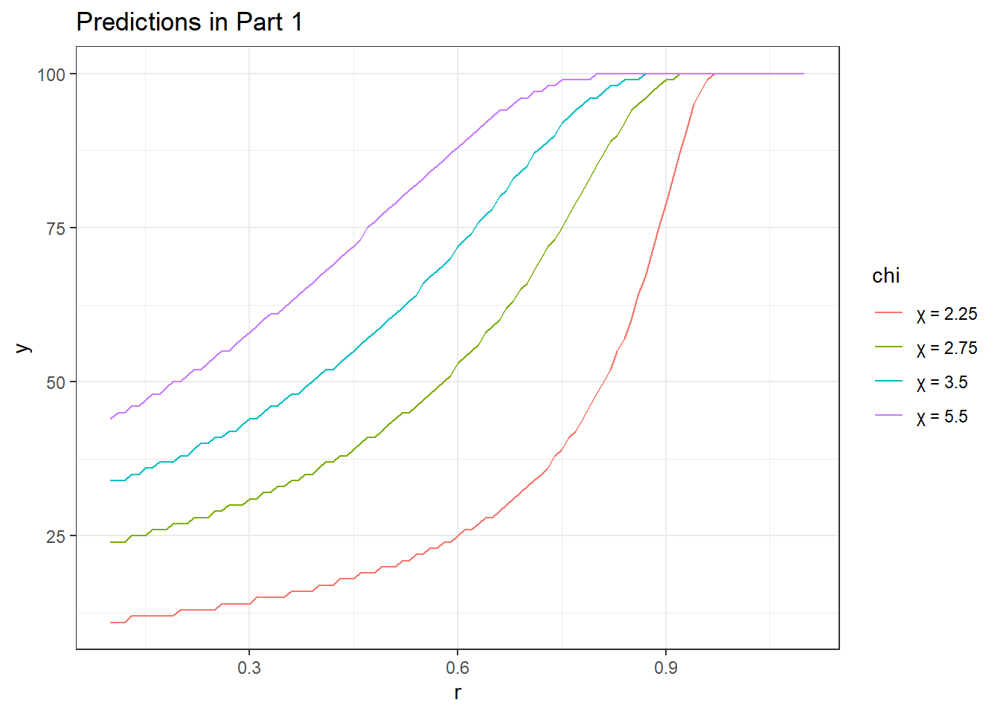

4 Bayes’ rule
\[ \Pr(A \mid B)=\frac{\Pr(B \mid A)\Pr(A)}{\Pr(B)} \]
4.1 In comparison to Chapter 3 (risk)
Risk:
- I know the probabilities of events. I make my decisions bases on:
- These probabilities
- My preferences over events
- Core model for decision-making with risk:
- Expected Utility Theory
- Maximize \(E[u(X)]\)
Beliefs:
- How do we get those probabilities?
- If I receive new information, how should I change my beliefs?
- Do people actually do this?
4.2 Conditional probability
What is the probability of an event, given that I know another event has happened?
- What is the probability that I slip on the sidewalk given that …
- It is snowing?
- It is not snowing?
- It is snowing, and the temperature is below \(10^\circ\mathrm F\)?
- What is the probability that I get an exam question on Bayes’ rule, given that …
- Dr. B only spends fifteen minutes discussing it in class
- Dr. B spends three classes discussing it
- Dr. B says “There will be a question on the exam on Bayes’ rule”
4.3 Example
- I roll a 6-sided die, and tell you that it is an odd number.
- What is the probability that I have rolled a 3?
- What is the probability that it is a number less than or equal to 3?
… working on doc cam
We would notate these probabilities like this: \[ \Pr(X=3 \mid X \text{ is odd}),\quad \Pr(X=3 \mid X \leq 3) \]
4.4 More generally
\[ \begin{aligned} \Pr(A \cap B)&=\Pr(A \mid B) \Pr(B)\\ \Pr(\text{events A and B are both true})&=\Pr(\text{event A is true given that B is true})\Pr(\text{B is true}) \end{aligned} \]
And we can swap the label of events \(A\) and \(B\), so: \[ \begin{aligned} \Pr(B \cap A) &=\Pr(B \mid A)\Pr(A) \end{aligned} \]
But the LHS of both of these expressions are the same event \((A\cap B)=(B\cap A)\), so \[ \begin{aligned} \Pr(A \cap B) &=\Pr(A\mid B)\Pr(B)=\Pr(B\mid A)\Pr(A)=\Pr(B \cap A) \end{aligned} \] Dividing both sides of the middle equality by \(\Pr(B)\): \[ \Pr(A\mid B)=\frac{\Pr(B\mid A)\Pr(A)}{\Pr(B)} \]
4.5 Example from PS3 - I
| ID | EV_ChooseA | EU_ChooseA | ChoseA |
|---|---|---|---|
| 1 | 1 | 0 | 0 |
| 2 | 1 | 1 | 1 |
| 3 | 1 | 1 | 0 |
| 4 | 1 | 1 | 0 |
| 5 | 1 | 1 | 1 |
| 6 | 1 | 1 | 1 |
4.6 Example, II
DSum<-D %>% group_by(ID) %>% summarize(ChooseEV = sum(ChoseA==EV_ChooseA),
ChooseEU = sum(ChoseA==EU_ChooseA),
Count=n())
knitr::kable(DSum)| ID | ChooseEV | ChooseEU | Count |
|---|---|---|---|
| 1 | 7 | 8 | 10 |
| 2 | 5 | 8 | 10 |
| 3 | 9 | 6 | 10 |
| 4 | 8 | 5 | 10 |
| 5 | 7 | 6 | 10 |
| 6 | 8 | 7 | 10 |
| 7 | 6 | 5 | 10 |
| 8 | 4 | 5 | 10 |
| 9 | 7 | 4 | 10 |
| 10 | 2 | 2 | 2 |
4.7 Example, III
Suppose that we have the following model for decisions:
\[ \begin{aligned} p(\text{ChooseEV}=1\mid \theta,\tau=\text{EV})&=\theta\\ p(\text{ChooseEU}=1\mid \theta,\tau=\text{EU})&=\theta\\ p(\tau=\text{EV})&=\rho\\ \end{aligned} \] We can write the likelihood, conditional on each type, as (assuming each decision is independent): \[ p(y_i\mid \tau,\theta,\rho)=\theta^{y_{i,\tau}}(1-\theta)^{n-y_{i,\tau}} \] And so the overall likelihood for an individual subject is: \[ p(y_i\mid \theta,\rho)=\rho \theta^{n_i^{EV}}(1-\theta)^{n_i-n_i^{EV}}+(1-\rho) \theta^{n_i^{EU}}(1-\theta)^{n_i-n_i^{EU}} \]
4.8 Example, IV
If we assume that each subjects’ choices are independent, then the likelihood of observing all of the data in the experiment is:
\[ \begin{aligned} p(y\mid \theta,\rho)&\prod_{i=1}^Np(y_i\mid \theta,\rho)\\ &=\prod_{i=1}^N\left(\rho \theta^{n_i^{EV}}(1-\theta)^{n_i-n_i^{EV}}+(1-\rho) \theta^{n_i^{EU}}(1-\theta)^{n_i-n_i^{EU}}\right) \end{aligned} \] where \(\prod_{i=1}^Nx_i=x_1\times x_2\times x_3\times\ldots\times x_N\)
In words: if we knew the fraction of EU types \(\rho\), and the probability of making a mistake \(\theta\), then the probability that we observed our data \(y\) is \(p(y\mid \theta,\rho)\).
4.9 Example, V
We have \(p(y\mid \theta,\rho)\), but want to construct beliefs about \(\theta\) and \(\rho\). Applying Bayes’ rule:
\[ \begin{aligned} p(A\mid B)&=\frac{p(B\mid A)p(A)}{p(B)}\\ \text{substitute: } A&=(\rho,\theta), B=y\\ p(\rho,\theta\mid y)&=\frac{p(y\mid\rho,\theta)p(\rho,\theta)}{p(y)}\\ &=\frac{p(\rho,\theta)}{p(y)}\prod_{i=1}^N\left(\rho \theta^{n_i^{EV}}(1-\theta)^{n_i-n_i^{EV}}+(1-\rho) \theta^{n_i^{EU}}(1-\theta)^{n_i-n_i^{EU}}\right) \end{aligned} \] Note that since \(p(y)\) is not a function of \(\theta\) or \(\rho\), we can write: \[ p(\theta,\rho\mid y)\propto p(\theta,\rho)\prod_{i=1}^N\left(\rho \theta^{n_i^{EV}}(1-\theta)^{n_i-n_i^{EV}}+(1-\rho) \theta^{n_i^{EU}}(1-\theta)^{n_i-n_i^{EU}}\right) \]
4.10 Example, VI
\[ p(\theta,\rho\mid y)\propto p(\theta,\rho)\prod_{i=1}^N\left(\rho \theta^{n_i^{EV}}(1-\theta)^{n_i-n_i^{EV}}+(1-\rho) \theta^{n_i^{EU}}(1-\theta)^{n_i-n_i^{EU}}\right) \] All that is left is to specify priors. Let’s make our life easy:
- Assume that my beliefs about \(\rho\) and \(\theta\) are independent. That is, before observing the experiment, \(p(\rho\mid\theta)=p(\rho)\), and \(p(\theta\mid\rho)=p(\theta)\)
- \(\rho\): Fraction of EV types. Must be a number between 0 and 1. Assume that any real number in this interval is equally likely.
- \(\theta\): Probability that a subject chooses the action that their type specifies. Again this is a probability, so it must be between 0 and 1. However, since this is the probability of following their type’s action, it makes sense that \(\theta>0.5\)
\[ \begin{aligned} p(\theta,\rho)&=p(\theta)p(\rho)=\begin{cases}\frac{1}{2}&\text{ if } 0.5<\theta<1 \text{ and } 0<\rho<1\\ 0&\text{ otherwise} \end{cases} \end{aligned} \]
4.11 Example, VII
Putting this all together:
\[ p(\theta,\rho\mid y)\propto \frac{1}{2}\prod_{i=1}^N\left(\rho \theta^{n_i^{EV}}(1-\theta)^{n_i-n_i^{EV}}+(1-\rho) \theta^{n_i^{EU}}(1-\theta)^{n_i-n_i^{EU}}\right) \]
for \(0.5<\theta<1\) and \(0<\rho<1\), zero otherwise.
This is a much easier problem for my computer than for me.
4.12 Example, VIII
pgrid<-as.matrix(seq(0.01,0.99,0.01))
tgrid<-as.matrix(seq(0.51,0.99,0.01))
THETA<-tgrid %*% (matrix(1,1,dim(pgrid)[1]))
RHO<-t(pgrid %*% (matrix(1,1,dim(tgrid)[1])))
LogLikelihood<-0*THETA
for (ii in DSum$ID) {
II<-DSum$ID==ii
LogLikelihood<-LogLikelihood+log(
RHO*(THETA^DSum[II,]$ChooseEV)*(1-THETA)^(DSum[II,]$Count-DSum[II,]$ChooseEV)
+(1-RHO)*THETA^DSum[II,]$ChooseEU*(1-THETA)^(DSum[II,]$Count-DSum[II,]$ChooseEU)
)
}
Posterior<-exp(LogLikelihood)/sum(exp(LogLikelihood))4.13 Example, IX
library(latex2exp)
theta<-as.vector(THETA)
rho<-as.vector(RHO)
Post<-as.vector(Posterior)
plotthis<-data.frame(theta,rho,Post)
plt<-(
ggplot(plotthis,aes(x=theta,y=rho,fill=Post))+geom_tile()
+theme_bw()+xlab(TeX("$\\theta$"))+ylab(TeX("$\\rho$"))
)4.14 Example, X
